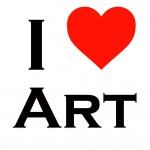
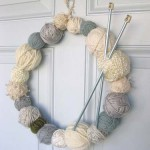
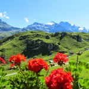

Interested in joining an activity group? Please contact the leader of that group.
Day Groups
Art Appreciation
Leaders: Alison King and Margaret Ellison
art@iwc-lausanne.org
This group has almost 80 members who are interested in art. We visit an exhibition about once a month or every 6 weeks, from September though May/June, somewhere in Switzerland, depending on what is on. Usually we are a group of between 12 and 25. Please contact Margaret and Alison to get on the mailing list.
Business Networking
Leader: Briana Steele-Zerbini
businessnet@iwc-lausanne.org
Meets monthly. Network with other women who are running their own businesses and support each other to develop and grow. Share ideas, challenges, and celebrations, and encourage each other to think big! Each month we have a topic and discuss how it relates to our business. We communicate through our Facebook group.
Knit-Wits
Leader: Carmen Vivacqu
knitting@iwc-lausanne.org
Do you like to knit? Do you want to improve your knitting? Do you even remember how to knit? Answer yes to any of the above and you are ready to join the Knit-Wits. We meet twice a month: the first Tuesday of the month at a member home from 13:00 until 15:00, and the third Monday of the month at the meeting room of the club, from 10:30 to 12.30. We use a doodle sign-up to know who is coming. If there is just one person, the meeting will be cancelled. For more information, please contact Carmen.
Music Appreciation
Leader: Marie Lou von Schack
music@iwc-lausanne.org
Our group is interested in music in all its aspects, whether modern, classical, oriental, jazz or world music. We are open to all the different facets of music and love to discover new topics. Some of us like giving a short conference on a subject, a composer, period or a player.we are particularly interested in, but you are not obliged to. If you would simply like to come and listen, you are more than welcome.
Sports and relaxation
Hiking
Leader: Karen Wilson
hiking@iwc-lausanne.org
The Hiking Group, a Club activity for more than 25 years, continues to thrive. An enthusiastic group of women of all ages, we meet every Tuesday between April and November exploring Vaud, Valais and occasionally venturing further afield. Our hikes start out gently in the spring and increase in difficulty as the season progresses. Outings generally last about 3 ½ to 4 ½ hours, including a picnic break and refreshments at a local café afterwards.
Mindfulness & Breathwork
Leader: Kumkum Seth (fee paid to professional instructor)
breatherelax@iwc-lausanne.org
Free trial class. We meet one Monday afternoon per month from 14:00-15:00 to practice mindfulness, breathwork and easy short meditations. All levels, beginner to advanced, are welcome. Modern life is fast, stressful and focussed outwards. Take the time to be mindful, breathe correctly, turn your awareness inwards, increase your total well-being. These practices will improve mental and physical health, personal relationships, coping with adversity, and enjoyment of life
Readers
Literature
Leaders: Tanis Vollmann and Liliane Barry
literature@iwc-lausanne.org
We meet the third Thursday morning of the month at the homes of different members. We were the first group to be formed after the club was founded, and the group is still going strong with about 17 members. We discuss a different topic each time and many of us participate. Previous topics have included The Seasons in Literature, Gardens, Scandinavian Writers, Women Who Changed the World, and Losing Power
Original Reader
Leaders: Kathy Koenitzer and Christine Doutrepont
readers@iwc-lausanne.org
We meet the first Monday of the month in the clubhouse library. The Original Readers was the first, and for a long time the only, book group in the club. Now we have several. We keep our numbers from eight to ten people in order to give everyone the chance to express herself. We take turns suggesting books for the group to read and discuss.